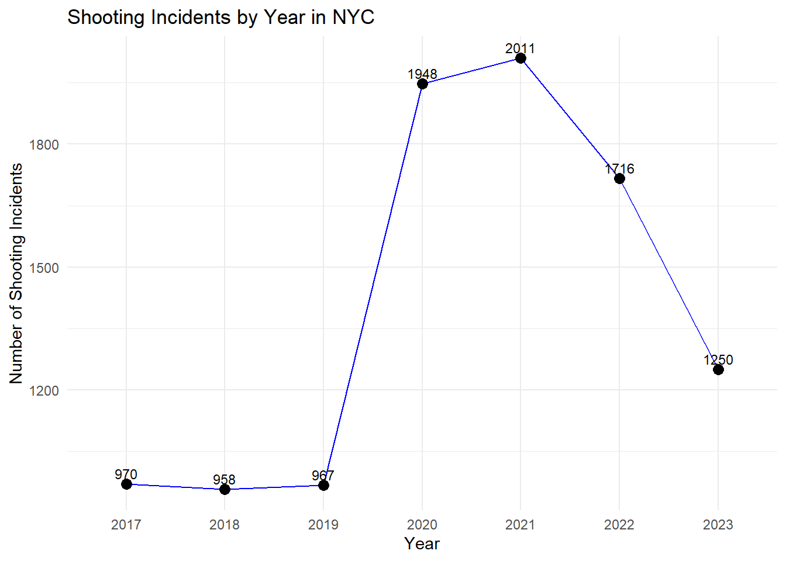
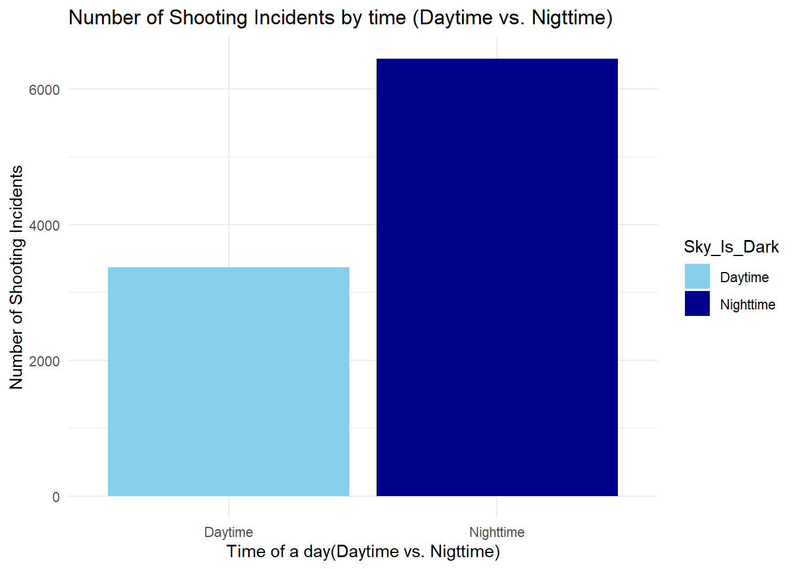

library(ggplot2)
library(readxl)
library(readr)
library(tidyverse)
library(dplyr)
library(sf)
library(plotly)
library(geojsonio)
library(knitr)
library(tidyr)# Load the dataset
df_descriptive=read_csv("data_final.csv")## Rows: 9820 Columns: 40
## ── Column specification ──────────────────────────────────────
## Delimiter: ","
## chr (17): BORO, LOC_OF_OCCUR_DESC, LOC_CLASSFCTN_DESC, LOCATION_DESC, PERP_...
## dbl (15): INCIDENT_KEY, PRECINCT, JURISDICTION_CODE, X_COORD_CD, Y_COORD_CD...
## num (2): Number_poverty, Number_education
## lgl (3): STATISTICAL_MURDER_FLAG, Is_Holiday, Sky_Is_Dark
## dttm (1): OCCUR_DATETIME
## date (1): OCCUR_DATE
## time (1): OCCUR_TIME
##
## ℹ Use `spec()` to retrieve the full column specification for this data.
## ℹ Specify the column types or set `show_col_types = FALSE` to quiet this message.# Grouping the data by year to count the number of incidents
df_descriptive$Year <- as.factor(df_descriptive$Year)
year_counts <- as.data.frame(table(df_descriptive$Year))
colnames(year_counts) <- c('Year', 'Count')
# Plotting the line chart for shooting incidents by year with data points labeled
ggplot(year_counts, aes(x = Year, y = Count, group = 1)) +
geom_line(color = 'blue') +
geom_point(size = 3) +
geom_text(aes(label = Count), vjust = -0.5, size = 3) +
labs(title = 'Shooting Incidents by Year in NYC',
x = 'Year',
y = 'Number of Shooting Incidents') +
theme_minimal()
The chart shows a stable trend in shooting incidents from 2017 to 2019, followed by a sharp increase in 2020, likely linked to socio-economic factors like the COVID-19 pandemic. Incidents peaked in 2021 and then declined through 2023.
# Grouping the data by month
df_descriptive$Month <- as.factor(df_descriptive$Month)
month_counts <- as.data.frame(table(df_descriptive$Month))
colnames(month_counts) <- c('Month', 'Count')
# Plotting the bar chart for shooting incidents by month
ggplot(month_counts, aes(x = Month, y = Count)) +
geom_bar(stat = 'identity', fill = 'skyblue') +
geom_text(aes(label = Count), vjust = -0.5) +
labs(title = 'Bar Chart of Shooting Incidents by Month in NYC',
x = 'Month',
y = 'Number of Shooting Incidents') +
theme_minimal()The bar chart shows a seasonal trend in shooting incidents in NYC, with a significant increase during the warmer months, peaking in July (1248 incidents). The highest numbers are seen in June, July, and August, while the lowest are in February (494 incidents) and January (617 incidents), suggesting fewer incidents during colder months. The gradual rise from January to July, followed by a decline towards December, indicates a correlation between warmer weather and increased incidents, potentially due to increased outdoor activities.
# Convert OCCUR_TIME to a proper time format
df_descriptive$OCCUR_TIME <- format(strptime(df_descriptive$OCCUR_TIME, format = "%H:%M:%S"), "%H:%M:%S")
# Plotting the density of the occurrence time
ggplot(df_descriptive, aes(x = as.POSIXct(OCCUR_TIME, format = "%H:%M:%S"))) +
geom_density(fill = 'skyblue', alpha = 0.6) +
labs(title = 'Density Plot of Shooting Incident Occurrence Time in NYC',
x = 'Time of Occurrence',
y = 'Density') +
scale_x_datetime(date_labels = "%H:%M") +
theme_minimal()The density plot shows changes in shooting incident trends throughout the day in NYC, with two distinct peaks. The first peak occurs in the late night to early morning hours, and the second peak appears in the evening. The lowest density is observed in the late morning to early afternoon.
# Bar chart showing the number of TRUE and FALSE in the Sky_Is_Dark variable
sky_dark_counts <- df_descriptive %>%
group_by(Sky_Is_Dark) %>%
summarise(total_incidents = n())
ggplot(sky_dark_counts, aes(x = Sky_Is_Dark, y = total_incidents, fill = Sky_Is_Dark)) +
geom_bar(stat = 'identity') +
labs(title = 'Number of Shooting Incidents by Sky Condition (Dark vs. Bright)',
x = 'Sky Condition (Dark vs. Bright)',
y = 'Number of Shooting Incidents') +
theme_minimal()
The number of shooting incidents when the sky was dark is significantly higher than when it was bright. This might indicate that shootings are more likely to occur during nighttime or low visibility conditions. The higher number of incidents during dark conditions could be due to factors such as reduced visibility, higher activity at night, or fewer people around, making it easier for incidents to occur undetected.
# Table showing Top 10 total incident NTA in Each Borough
incident_by_nta_borough <- df_descriptive %>%
drop_na() %>%
group_by(BORO, NTA) %>%
summarise(total_incidents = n()) %>%
arrange(BORO, desc(total_incidents)) %>%
group_by(BORO) %>%
slice_max(n = 10, order_by = total_incidents) %>%
select(-total_incidents) %>%
group_by(BORO) %>%
mutate(row_num = row_number()) %>%
pivot_wider(names_from = BORO, values_from = NTA) %>%
unnest(cols = c(BRONX, BROOKLYN, MANHATTAN, QUEENS, `STATEN ISLAND`)) %>%
select(row_num, everything())%>%
slice(1:10)## `summarise()` has grouped output by 'BORO'. You can override
## using the `.groups` argument.# Display the table in the desired format
kable(incident_by_nta_borough, caption = "Top 10 NTAs with Total Shooting Incidents in Each Borough (2017-2023)")| row_num | BRONX | BROOKLYN | MANHATTAN | QUEENS | STATEN ISLAND |
|---|---|---|---|---|---|
| 1 | Mott Haven-Port Morris | Brownsville | East Harlem (North) | Far Rockaway-Bayswater | St. George-New Brighton |
| 2 | Mount Hope | Bedford-Stuyvesant (East) | Harlem (North) | Baisley Park | Tompkinsville-Stapleton-Clifton-Fox Hills |
| 3 | Tremont | Crown Heights (North) | East Harlem (South) | Richmond Hill | West New Brighton-Silver Lake-Grymes Hill |
| 4 | Mount Eden-Claremont (West) | East New York-New Lots | Harlem (South) | Jamaica | Mariner’s Harbor-Arlington-Graniteville |
| 5 | Concourse-Concourse Village | East Flatbush-Remsen Village | Washington Heights (South) | Rockaway Beach-Arverne-Edgemere | Annadale-Huguenot-Prince’s Bay-Woodrow |
| 6 | Williamsbridge-Olinville | East New York (North) | Chelsea-Hudson Yards | St. Albans | Port Richmond |
| 7 | Melrose | Bedford-Stuyvesant (West) | Hamilton Heights-Sugar Hill | South Ozone Park | Rosebank-Shore Acres-Park Hill |
| 8 | Belmont | Canarsie | Inwood | Elmhurst | Grasmere-Arrochar-South Beach-Dongan Hills |
| 9 | Longwood | Coney Island-Sea Gate | Chinatown-Two Bridges | South Jamaica | Great Kills-Eltingville |
| 10 | Fordham Heights | East New York-City Line | Washington Heights (North) | Astoria (East)-Woodside (North) | New Dorp-Midland Beach |
# Get the Top 10 NTAs with the Highest Incident Rate by Year
top_10_incident_rate <- df_descriptive %>%
distinct(incident_rate_by_year_nta, .keep_all = TRUE) %>%
filter(NTAType == 'Residential') %>%
arrange(desc(incident_rate_by_year_nta)) %>%
slice(1:10)
# Pull information for the Top 10 NTAs
top_10_nta_incident_rate <- top_10_incident_rate %>%
select(NTA, BORO, incident_rate = incident_rate_by_year_nta,
total_population = Total_population_nta,
percent_poverty = Percent_poverty,
percent_education = Percent_education)
# Display the table in the desired format
kable(top_10_nta_incident_rate, digits = 6, caption = "Top 10 NTAs with the Highest Incident Rate by Year in Each Boroug")| NTA | BORO | incident_rate | total_population | percent_poverty | percent_education |
|---|---|---|---|---|---|
| Claremont Village-Claremont (East) | BRONX | 0.187350 | 24553 | 43.2 | 61.7 |
| Brownsville | BROOKLYN | 0.153795 | 60470 | 37.2 | 76.9 |
| Tremont | BRONX | 0.118196 | 32150 | 36.3 | 71.4 |
| Inwood | MANHATTAN | 0.115706 | 36299 | 15.3 | 77.0 |
| East New York-New Lots | BROOKLYN | 0.107539 | 53004 | 25.3 | 82.6 |
| Hunts Point | BRONX | 0.105743 | 15131 | 34.3 | 72.2 |
| Mount Eden-Claremont (West) | BRONX | 0.100703 | 49651 | 31.8 | 67.9 |
| Brownsville | BROOKLYN | 0.099223 | 60470 | 37.2 | 76.9 |
| Brownsville | BROOKLYN | 0.097569 | 60470 | 37.2 | 76.9 |
| Tremont | BRONX | 0.096423 | 32150 | 36.3 | 71.4 |
# Plot: Description of Victims
victim_summary <- df_descriptive %>%
filter(VIC_SEX %in% c("M", "F")) %>% # Filter out unknown
group_by(VIC_SEX, VIC_AGE_GROUP, VIC_RACE) %>%
summarise(total_victims = n()) %>%
drop_na()## `summarise()` has grouped output by 'VIC_SEX',
## 'VIC_AGE_GROUP'. You can override using the `.groups`
## argument.# Plotting the description of male victims
ggplot(victim_summary %>% filter(VIC_SEX == "M"), aes(x = VIC_AGE_GROUP, y = total_victims, fill = VIC_RACE)) +
geom_bar(stat = 'identity', position = 'dodge') +
labs(title = "Description of Male Shooting Victims by Age Group and Race",
x = "Victim Age Group",
y = "Number of Victims",
fill = "Victim Race") +
theme_minimal() +
theme(axis.text.x = element_text(angle = 45, hjust = 1))# Plotting the description of female victims
ggplot(victim_summary %>% filter(VIC_SEX == "F"), aes(x = VIC_AGE_GROUP, y = total_victims, fill = VIC_RACE)) +
geom_bar(stat = 'identity', position = 'dodge') +
labs(title = "Description of Female Shooting Victims by Age Group and Race",
x = "Victim Age Group",
y = "Number of Victims",
fill = "Victim Race") +
theme_minimal() +
theme(axis.text.x = element_text(angle = 45, hjust = 1))The bar charts show the distribution of male and female shooting victims by age group and race in NYC. In both charts, Black victims are the most affected across all age groups, with the highest number of victims in the 18-24 and 25-44 age groups. For males, the 25-44 age group shows a notable peak, while for females, the same age group also has the highest numbers. White Hispanic victims also show considerable numbers, particularly in the 25-44 age group.
# Plot: Bar chart showing victim's age
ggplot(df_descriptive %>% filter(!is.na(VIC_AGE_GROUP)& VIC_AGE_GROUP != 1022), aes(x = VIC_AGE_GROUP)) +
geom_bar(fill = "steelblue") +
labs(title = "Bar Chart of Victim's Age",
x = "Victim Age Group",
y = "Count of Victims") +
theme_minimal() +
theme(axis.text.x = element_text(angle = 45, hjust = 1))The 25-44 age group has the highest number of victims, significantly more than any other group. The 18-24 age group also shows a considerable number of victims, while the <18 and 45-64 age groups have notably fewer victims. The 65+ age group has the least number of victims.
# Table showing Top 10 NTAs with the Highest Total Shooting Incidents
top_10_nta_overall <- df_descriptive %>%
group_by(BORO, NTA) %>%
summarise(total_incidents = n(),
total_population = first(Total_population_nta),
percent_poverty = first(Percent_poverty),
percent_education = first(Percent_education)) %>%
arrange(desc(total_incidents)) %>%
ungroup() %>%
slice(1:10) %>%
select(BORO, NTA, total_incidents, total_population, percent_poverty, percent_education)## `summarise()` has grouped output by 'BORO'. You can override
## using the `.groups` argument.# Display the table in the desired format
kable(top_10_nta_overall, digits = 2, caption = "Top 10 NTAs with the Highest Total Shooting Incidents")| BORO | NTA | total_incidents | total_population | percent_poverty | percent_education |
|---|---|---|---|---|---|
| BROOKLYN | Brownsville | 350 | 60470 | 37.2 | 76.9 |
| BROOKLYN | Bedford-Stuyvesant (East) | 323 | 84653 | 22.2 | 87.8 |
| MANHATTAN | Harlem (North) | 253 | 83327 | 25.1 | 82.9 |
| BROOKLYN | Crown Heights (North) | 235 | 85275 | 20.5 | 84.1 |
| MANHATTAN | East Harlem (North) | 229 | 64655 | 32.3 | 75.9 |
| BRONX | Mott Haven-Port Morris | 207 | 57718 | 43.7 | 62.0 |
| BROOKLYN | Bedford-Stuyvesant (West) | 207 | 89189 | 26.0 | 84.8 |
| BROOKLYN | East New York-New Lots | 205 | 53004 | 25.3 | 82.6 |
| BRONX | Concourse-Concourse Village | 169 | 69387 | 31.9 | 70.5 |
| BRONX | Mount Eden-Claremont (West) | 166 | 49651 | 31.8 | 67.9 |
# Table showing Top 10 NTAs with the Highest Total Shooting Incidents in MANHATTAN
top_10_nta_overall_manhattan <- df_descriptive %>%
filter(BORO == 'MANHATTAN') %>%
group_by(BORO, NTA) %>%
summarise(total_incidents = n(),
total_population = first(Total_population_nta),
percent_poverty = first(Percent_poverty),
percent_education = first(Percent_education)) %>%
arrange(desc(total_incidents)) %>%
ungroup() %>%
slice(1:10) %>%
select(BORO, NTA, total_incidents, total_population, percent_poverty, percent_education)## `summarise()` has grouped output by 'BORO'. You can override
## using the `.groups` argument.# Display the table in the desired format
kable(top_10_nta_overall_manhattan, digits = 2, caption = "Top 10 NTAs with the Highest Total Shooting Incidents in MANHATTAN")| BORO | NTA | total_incidents | total_population | percent_poverty | percent_education |
|---|---|---|---|---|---|
| MANHATTAN | Harlem (North) | 253 | 83327 | 25.1 | 82.9 |
| MANHATTAN | East Harlem (North) | 229 | 64655 | 32.3 | 75.9 |
| MANHATTAN | East Harlem (South) | 145 | 59814 | 29.0 | 78.3 |
| MANHATTAN | Harlem (South) | 130 | 47113 | 18.8 | 87.4 |
| MANHATTAN | Inwood | 105 | 36299 | 15.3 | 77.0 |
| MANHATTAN | Washington Heights (South) | 88 | 72037 | 19.9 | 70.3 |
| MANHATTAN | Washington Heights (North) | 67 | 71842 | 14.8 | 79.3 |
| MANHATTAN | Hamilton Heights-Sugar Hill | 54 | 49410 | 24.0 | 78.6 |
| MANHATTAN | Manhattanville-West Harlem | 46 | 22183 | 26.7 | 77.4 |
| MANHATTAN | East Village | 41 | 71436 | 24.3 | 87.7 |
# Table showing Top 10 NTAs with the Highest Total Shooting Incidents in BROOKLYN
top_10_nta_overall_brooklyn <- df_descriptive %>%
filter(BORO == 'BROOKLYN') %>%
group_by(BORO, NTA) %>%
summarise(total_incidents = n(),
total_population = first(Total_population_nta),
percent_poverty = first(Percent_poverty),
percent_education = first(Percent_education)) %>%
arrange(desc(total_incidents)) %>%
ungroup() %>%
slice(1:10) %>%
select(BORO, NTA, total_incidents, total_population, percent_poverty, percent_education)## `summarise()` has grouped output by 'BORO'. You can override
## using the `.groups` argument.# Display the table in the desired format
kable(top_10_nta_overall_brooklyn, digits = 2, caption = "Top 10 NTAs with the Highest Total Shooting Incidents in BROOKLYN")| BORO | NTA | total_incidents | total_population | percent_poverty | percent_education |
|---|---|---|---|---|---|
| BROOKLYN | Brownsville | 350 | 60470 | 37.2 | 76.9 |
| BROOKLYN | Bedford-Stuyvesant (East) | 323 | 84653 | 22.2 | 87.8 |
| BROOKLYN | Crown Heights (North) | 235 | 85275 | 20.5 | 84.1 |
| BROOKLYN | Bedford-Stuyvesant (West) | 207 | 89189 | 26.0 | 84.8 |
| BROOKLYN | East New York-New Lots | 205 | 53004 | 25.3 | 82.6 |
| BROOKLYN | Canarsie | 166 | 89932 | 13.0 | 88.1 |
| BROOKLYN | East New York (North) | 148 | 42818 | 25.5 | 79.4 |
| BROOKLYN | East Flatbush-Remsen Village | 126 | 39115 | 18.7 | 83.7 |
| BROOKLYN | Ocean Hill | 120 | 37952 | 27.3 | 83.1 |
| BROOKLYN | Flatbush | 111 | 66503 | 13.7 | 87.8 |
# Table showing Top 10 NTAs with the Highest Total Shooting Incidents in BROOKLYN
top_10_nta_overall_bronx <- df_descriptive %>%
filter(BORO == 'BRONX') %>%
group_by(BORO, NTA) %>%
summarise(total_incidents = n(),
total_population = first(Total_population_nta),
percent_poverty = first(Percent_poverty),
percent_education = first(Percent_education)) %>%
arrange(desc(total_incidents)) %>%
ungroup() %>%
slice(1:10) %>%
select(BORO, NTA, total_incidents, total_population, percent_poverty, percent_education)## `summarise()` has grouped output by 'BORO'. You can override
## using the `.groups` argument.# Display the table in the desired format
kable(top_10_nta_overall_bronx, digits = 2, caption = "Top 10 NTAs with the Highest Total Shooting Incidents in BRONX")| BORO | NTA | total_incidents | total_population | percent_poverty | percent_education |
|---|---|---|---|---|---|
| BRONX | Mott Haven-Port Morris | 207 | 57718 | 43.7 | 62.0 |
| BRONX | Concourse-Concourse Village | 169 | 69387 | 31.9 | 70.5 |
| BRONX | Mount Eden-Claremont (West) | 166 | 49651 | 31.8 | 67.9 |
| BRONX | Williamsbridge-Olinville | 158 | 61346 | 21.0 | 76.6 |
| BRONX | Melrose | 152 | 42651 | 40.7 | 68.2 |
| BRONX | Mount Hope | 149 | 49099 | 30.2 | 66.8 |
| BRONX | Tremont | 138 | 32150 | 36.3 | 71.4 |
| BRONX | Longwood | 130 | 40289 | 32.0 | 66.9 |
| BRONX | Belmont | 116 | 35825 | 39.6 | 65.6 |
| BRONX | Fordham Heights | 112 | 32099 | 33.2 | 66.0 |
# Table showing Top 10 NTAs with the Highest Total Shooting Incidents in BROOKLYN
top_10_nta_overall_queens <- df_descriptive %>%
filter(BORO == 'QUEENS') %>%
group_by(BORO, NTA) %>%
summarise(total_incidents = n(),
total_population = first(Total_population_nta),
percent_poverty = first(Percent_poverty),
percent_education = first(Percent_education)) %>%
arrange(desc(total_incidents)) %>%
ungroup() %>%
slice(1:10) %>%
select(BORO, NTA, total_incidents, total_population, percent_poverty, percent_education)## `summarise()` has grouped output by 'BORO'. You can override
## using the `.groups` argument.# Display the table in the desired format
kable(top_10_nta_overall_queens, digits = 2, caption = "Top 10 NTAs with the Highest Total Shooting Incidents in QUEENS")| BORO | NTA | total_incidents | total_population | percent_poverty | percent_education |
|---|---|---|---|---|---|
| QUEENS | Far Rockaway-Bayswater | 116 | 58648 | 18.3 | 79.9 |
| QUEENS | Rockaway Beach-Arverne-Edgemere | 100 | 41367 | 22.1 | 82.1 |
| QUEENS | St. Albans | 93 | 51816 | 8.6 | 88.8 |
| QUEENS | South Jamaica | 91 | 44401 | 13.4 | 78.9 |
| QUEENS | Baisley Park | 83 | 43090 | 11.4 | 83.5 |
| QUEENS | Jamaica | 82 | 60993 | 15.7 | 70.4 |
| QUEENS | Queensbridge-Ravenswood-Dutch Kills | 79 | 32954 | 16.5 | 85.0 |
| QUEENS | South Ozone Park | 66 | 79540 | 9.7 | 76.7 |
| QUEENS | Richmond Hill | 55 | 34100 | 10.6 | 79.8 |
| QUEENS | Laurelton | 45 | 26088 | 5.4 | 91.2 |
# Table showing Top 10 NTAs with the Highest Total Shooting Incidents in BROOKLYN
top_10_nta_overall_staten <- df_descriptive %>%
filter(BORO == 'STATEN ISLAND') %>%
group_by(BORO, NTA) %>%
summarise(total_incidents = n(),
total_population = first(Total_population_nta),
percent_poverty = first(Percent_poverty),
percent_education = first(Percent_education)) %>%
arrange(desc(total_incidents)) %>%
ungroup() %>%
slice(1:10) %>%
select(BORO, NTA, total_incidents, total_population, percent_poverty, percent_education)## `summarise()` has grouped output by 'BORO'. You can override
## using the `.groups` argument.# Display the table in the desired format
kable(top_10_nta_overall_staten, digits = 2, caption = "Top 10 NTAs with the Highest Total Shooting Incidents in STATEN ISLAND")| BORO | NTA | total_incidents | total_population | percent_poverty | percent_education |
|---|---|---|---|---|---|
| STATEN ISLAND | St. George-New Brighton | 48 | 20549 | 18.5 | 79.9 |
| STATEN ISLAND | Mariner’s Harbor-Arlington-Graniteville | 46 | 33492 | 16.8 | 83.3 |
| STATEN ISLAND | Tompkinsville-Stapleton-Clifton-Fox Hills | 42 | 19027 | 25.5 | 79.2 |
| STATEN ISLAND | Rosebank-Shore Acres-Park Hill | 34 | 25510 | 14.4 | 81.7 |
| STATEN ISLAND | West New Brighton-Silver Lake-Grymes Hill | 26 | 37010 | 9.9 | 91.2 |
| STATEN ISLAND | Port Richmond | 23 | 22609 | 22.0 | 83.2 |
| STATEN ISLAND | Grasmere-Arrochar-South Beach-Dongan Hills | 8 | 36259 | 11.3 | 85.4 |
| STATEN ISLAND | Annadale-Huguenot-Prince’s Bay-Woodrow | 6 | 40534 | 6.0 | 92.6 |
| STATEN ISLAND | New Dorp-Midland Beach | 5 | 29083 | 8.5 | 84.6 |
| STATEN ISLAND | Arden Heights-Rossville | 4 | 30683 | 4.3 | 92.3 |
# Get the Top 10 NTAs with the Highest Incident Rate by Year
top_10_incident_rate_manhattan <- df_descriptive %>%
distinct(incident_rate_by_year_nta, .keep_all = TRUE) %>%
filter(BORO == 'MANHATTAN') %>%
filter(NTAType == 'Residential') %>%
arrange(desc(incident_rate_by_year_nta)) %>%
slice(1:10)
# Pull information for the Top 10 NTAs
top_10_nta_incident_rate_manhattan <- top_10_incident_rate_manhattan %>%
select(NTA, BORO, incident_rate = incident_rate_by_year_nta,
total_population = Total_population_nta,
percent_poverty = Percent_poverty,
percent_education = Percent_education)
# Display the table in the desired format
kable(top_10_nta_incident_rate_manhattan, digits = 6, caption = "Top 10 NTAs with the Highest Incident Rate by Year in MANHATTAN")| NTA | BORO | incident_rate | total_population | percent_poverty | percent_education |
|---|---|---|---|---|---|
| Inwood | MANHATTAN | 0.115706 | 36299 | 15.3 | 77.0 |
| East Harlem (North) | MANHATTAN | 0.086614 | 64655 | 32.3 | 75.9 |
| Harlem (North) | MANHATTAN | 0.080406 | 83327 | 25.1 | 82.9 |
| Inwood | MANHATTAN | 0.068872 | 36299 | 15.3 | 77.0 |
| Harlem (South) | MANHATTAN | 0.065799 | 47113 | 18.8 | 87.4 |
| Harlem (North) | MANHATTAN | 0.064805 | 83327 | 25.1 | 82.9 |
| East Harlem (North) | MANHATTAN | 0.061867 | 64655 | 32.3 | 75.9 |
| Harlem (South) | MANHATTAN | 0.057309 | 47113 | 18.8 | 87.4 |
| Harlem (North) | MANHATTAN | 0.055204 | 83327 | 25.1 | 82.9 |
| East Harlem (South) | MANHATTAN | 0.055171 | 59814 | 29.0 | 78.3 |
# Get the Top 10 NTAs with the Highest Incident Rate by Year
top_10_incident_rate_brooklyn <- df_descriptive %>%
distinct(incident_rate_by_year_nta, .keep_all = TRUE) %>%
filter(BORO == 'BROOKLYN') %>%
filter(NTAType == 'Residential') %>%
arrange(desc(incident_rate_by_year_nta)) %>%
slice(1:10)
# Pull information for the Top 10 NTAs
top_10_nta_incident_rate_brooklyn <- top_10_incident_rate_brooklyn %>%
select(NTA, BORO, incident_rate = incident_rate_by_year_nta,
total_population = Total_population_nta,
percent_poverty = Percent_poverty,
percent_education = Percent_education)
# Display the table in the desired format
kable(top_10_nta_incident_rate_brooklyn, digits = 6, caption = "Top 10 NTAs with the Highest Incident Rate by Year in BROOKLYN")| NTA | BORO | incident_rate | total_population | percent_poverty | percent_education |
|---|---|---|---|---|---|
| Brownsville | BROOKLYN | 0.153795 | 60470 | 37.2 | 76.9 |
| East New York-New Lots | BROOKLYN | 0.107539 | 53004 | 25.3 | 82.6 |
| Brownsville | BROOKLYN | 0.099223 | 60470 | 37.2 | 76.9 |
| Brownsville | BROOKLYN | 0.097569 | 60470 | 37.2 | 76.9 |
| Bedford-Stuyvesant (East) | BROOKLYN | 0.088597 | 84653 | 22.2 | 87.8 |
| East New York (North) | BROOKLYN | 0.079406 | 42818 | 25.5 | 79.4 |
| East New York-New Lots | BROOKLYN | 0.079239 | 53004 | 25.3 | 82.6 |
| East Flatbush-Remsen Village | BROOKLYN | 0.071584 | 39115 | 18.7 | 83.7 |
| Ocean Hill | BROOKLYN | 0.071142 | 37952 | 27.3 | 83.1 |
| Brownsville | BROOKLYN | 0.069456 | 60470 | 37.2 | 76.9 |
# Get the Top 10 NTAs with the Highest Incident Rate by Year
top_10_incident_rate_bronx <- df_descriptive %>%
distinct(incident_rate_by_year_nta, .keep_all = TRUE) %>%
filter(BORO == 'BRONX') %>%
filter(NTAType == 'Residential') %>%
arrange(desc(incident_rate_by_year_nta)) %>%
slice(1:10)
# Pull information for the Top 10 NTAs
top_10_nta_incident_rate_bronx <- top_10_incident_rate_bronx %>%
select(NTA, BORO, incident_rate = incident_rate_by_year_nta,
total_population = Total_population_nta,
percent_poverty = Percent_poverty,
percent_education = Percent_education)
# Display the table in the desired format
kable(top_10_nta_incident_rate_bronx, digits = 6, caption = "Top 10 NTAs with the Highest Incident Rate by Year in BRONX")| NTA | BORO | incident_rate | total_population | percent_poverty | percent_education |
|---|---|---|---|---|---|
| Claremont Village-Claremont (East) | BRONX | 0.187350 | 24553 | 43.2 | 61.7 |
| Tremont | BRONX | 0.118196 | 32150 | 36.3 | 71.4 |
| Hunts Point | BRONX | 0.105743 | 15131 | 34.3 | 72.2 |
| Mount Eden-Claremont (West) | BRONX | 0.100703 | 49651 | 31.8 | 67.9 |
| Tremont | BRONX | 0.096423 | 32150 | 36.3 | 71.4 |
| West Farms | BRONX | 0.094307 | 20147 | 44.8 | 61.1 |
| Longwood | BRONX | 0.091836 | 40289 | 32.0 | 66.9 |
| Mount Hope | BRONX | 0.089615 | 49099 | 30.2 | 66.8 |
| West Farms | BRONX | 0.084380 | 20147 | 44.8 | 61.1 |
| Morrisania | BRONX | 0.082431 | 37607 | 35.7 | 65.9 |
# Get the Top 10 NTAs with the Highest Incident Rate by Year
top_10_incident_rate_queens <- df_descriptive %>%
distinct(incident_rate_by_year_nta, .keep_all = TRUE) %>%
filter(BORO == 'QUEENS') %>%
filter(NTAType == 'Residential') %>%
arrange(desc(incident_rate_by_year_nta)) %>%
slice(1:10)
# Pull information for the Top 10 NTAs
top_10_nta_incident_rate_queens <- top_10_incident_rate_queens %>%
select(NTA, BORO, incident_rate = incident_rate_by_year_nta,
total_population = Total_population_nta,
percent_poverty = Percent_poverty,
percent_education = Percent_education)
# Display the table in the desired format
kable(top_10_nta_incident_rate_queens, digits = 6, caption = "Top 10 NTAs with the Highest Incident Rate by Year in QUEENS")| NTA | BORO | incident_rate | total_population | percent_poverty | percent_education |
|---|---|---|---|---|---|
| South Jamaica | QUEENS | 0.069818 | 44401 | 13.4 | 78.9 |
| Rockaway Beach-Arverne-Edgemere | QUEENS | 0.067687 | 41367 | 22.1 | 82.1 |
| Far Rockaway-Bayswater | QUEENS | 0.064793 | 58648 | 18.3 | 79.9 |
| Queensbridge-Ravenswood-Dutch Kills | QUEENS | 0.054622 | 32954 | 16.5 | 85.0 |
| Laurelton | QUEENS | 0.053665 | 26088 | 5.4 | 91.2 |
| Rockaway Beach-Arverne-Edgemere | QUEENS | 0.050765 | 41367 | 22.1 | 82.1 |
| Richmond Hill | QUEENS | 0.046921 | 34100 | 10.6 | 79.8 |
| Queensbridge-Ravenswood-Dutch Kills | QUEENS | 0.045518 | 32954 | 16.5 | 85.0 |
| St. Albans | QUEENS | 0.044388 | 51816 | 8.6 | 88.8 |
| Richmond Hill | QUEENS | 0.043988 | 34100 | 10.6 | 79.8 |
# Get the Top 10 NTAs with the Highest Incident Rate by Year
top_10_incident_rate_staten <- df_descriptive %>%
distinct(incident_rate_by_year_nta, .keep_all = TRUE) %>%
filter(BORO == 'STATEN ISLAND') %>%
filter(NTAType == 'Residential') %>%
arrange(desc(incident_rate_by_year_nta)) %>%
slice(1:10)
# Pull information for the Top 10 NTAs
top_10_nta_incident_rate_staten <- top_10_incident_rate_staten %>%
select(NTA, BORO, incident_rate = incident_rate_by_year_nta,
total_population = Total_population_nta,
percent_poverty = Percent_poverty,
percent_education = Percent_education)
# Display the table in the desired format
kable(top_10_nta_incident_rate_staten, digits = 6, caption = "Top 10 NTAs with the Highest Incident Rate by Year in STATEN ISLAND")| NTA | BORO | incident_rate | total_population | percent_poverty | percent_education |
|---|---|---|---|---|---|
| St. George-New Brighton | STATEN ISLAND | 0.058397 | 20549 | 18.5 | 79.9 |
| Tompkinsville-Stapleton-Clifton-Fox Hills | STATEN ISLAND | 0.052557 | 19027 | 25.5 | 79.2 |
| Mariner’s Harbor-Arlington-Graniteville | STATEN ISLAND | 0.047773 | 33492 | 16.8 | 83.3 |
| Port Richmond | STATEN ISLAND | 0.044230 | 22609 | 22.0 | 83.2 |
| St. George-New Brighton | STATEN ISLAND | 0.043798 | 20549 | 18.5 | 79.9 |
| St. George-New Brighton | STATEN ISLAND | 0.038931 | 20549 | 18.5 | 79.9 |
| Mariner’s Harbor-Arlington-Graniteville | STATEN ISLAND | 0.038815 | 33492 | 16.8 | 83.3 |
| Tompkinsville-Stapleton-Clifton-Fox Hills | STATEN ISLAND | 0.036790 | 19027 | 25.5 | 79.2 |
| Rosebank-Shore Acres-Park Hill | STATEN ISLAND | 0.035280 | 25510 | 14.4 | 81.7 |
| St. George-New Brighton | STATEN ISLAND | 0.034065 | 20549 | 18.5 | 79.9 |